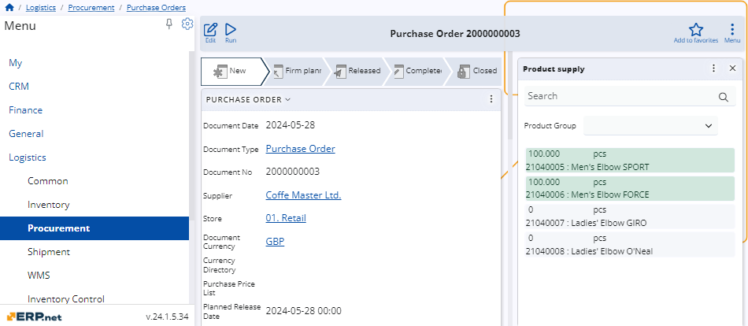

How to use the Product supply panel
For purchase, transfer, and work order documents, there's a functional panel called Product Supply.
It displays a list of currently active products available for delivery for a specific store in a particular enterprise company.
- For purchase orders, this list is filtered by the Supplier field.
- For transfer orders, it is filtered by the FromStore field.
- For work orders, the list is filtered by the DefaultStore field.
Navigation
To reveal the Product supply panel, you need to open the document form of either a purchase, a transfer, or a work order.
Then, choose Product supply from the list of Functional panels found within the Menu button.
Note
The panel's buttons will be visible and usable only when you:
- create a new purchase, transfer, or work order
- edit an existing purchase, transfer, or work order with status lower than Released.
Panel features
The Product supply panel includes a search bar and an option to filter products by groups.
You can enter product quantities manually, adjust them with “+” and “-” buttons, as well as determine their measurement units,
Quantities supplied for a product are interpreted as new rows in the Lines panel of the respective document.

Filter by product groups
For convenience, you can filter products for supply by choosing the product group to which they belong.
Simply expand the Product Group dropdown menu from the Product supply panel and select the desired group.
Once selected, only products from the chosen group will appear in the list.

Set quantities and measurement units
You can easily increase or decrease quantities of products available for delivery, as well as change their default measurement units.
To do so, you need to be in Edit mode for the respective document.
Then, use the “+” and “-” buttons to increase or decrease quantities as needed.

Replenish quantities
The Product Supply panel also offers automated suggestions for replenishing quantities for a particular product.
These are represented by an orange button located to the right of the product's measurement unit field.
Clicking this button will automatically set the product quantity to the suggested value for replenishment.

Warning
Suggestions for replenishment are shown only for products that can be supplied.
Note
The screenshots taken for this article are from v24 of the platform.